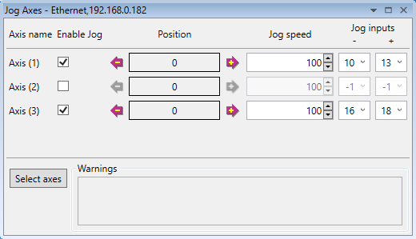
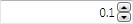
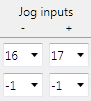
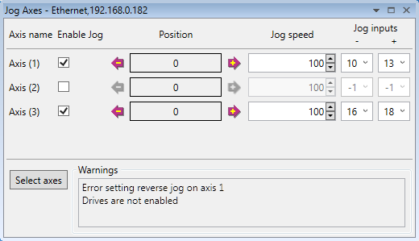
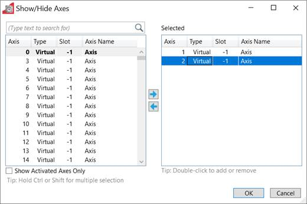

The Jog Axes tool allows the user to move the axes on the Motion Coordinator.

This tool takes advantage of the bi-directional I/O channels on the Motion Coordinator to set the jog inputs. The forward, reverse and fast jog inputs are identified by writing to the corresponding axis parameters and are expected to be connected to NC switches. This means that when the input is on (+24V applied) then the corresponding jog function is DISABLED and when the input is off (0V) then the jog function is ENABLED.
The jog functions implemented here disable the fast jog function, which means that the speed at which the jog will be performed is set by the JOGSPEED axis parameter. What is more this window limits the jog speed to the range 0..demand_speed, where the demand_speed is given by the SPEED axis parameter.
Before allowing a jog to be initiated, the jog window checks that all the data set in the jog window and on the Motion Coordinator is valid for a jog to be performed.
Each axis has a check box to enable/disable jogging on that axis. This allows jogging to be configured on an axis but not actually used. This is sometimes useful in machine development.
This button will initiate a reverse jog. In order to do this, the following check sequence is performed:
If there were no warnings set, then the message "Reverse jog set on axis?" is set in the warnings window, the FAST_JOG input is invalidated for this axis, the CREEP is set to the value given in the jog speed control and finally the JOG_REV output is turned off, thus enabling the reverse jog function.
This button will initiate a forward jog. In order to do this, a check sequence identical to that used for Jog Reverse is performed.

This is the speed at which the jog will be performed. This window limits this value to the range from zero to the demand speed for this axis, where the demand speed is given by the SPEED axis parameter. This value can be changed by writing directly to this control or using the jog speed control. The scroll bar changes the jog speed up or down in increments of 1 unit per second

These are the inputs which will be associated with the forward / reverse jog functions.
They must be in the range 8 to the total number of inputs in the system as the input channels 0 to 7 are not bi-directional and so the state of the input cannot be set by the corresponding output. Both real and virtual I/O lines can be used for jogging. The value -1 is shown when no input has been allocated for jogging.
The jog function depends on the state of the jog inputs as follows:
|
Jog - |
Jog + |
Function |
|
OFF |
OFF |
Not defined |
|
OFF |
ON |
Reverse Jog |
|
ON |
OFF |
Forward Jog |
|
ON |
ON |
No jog |

This shows the status of the last jog request. For example, the screen above shows an error on axis 1 because the drives are not enabled.
An error will occur if a dedicated input is allocated as a jog input because Motion Perfect is unable to change it's state.

This displays an axis selector box which enables the user to select the axis to include in the jog axes display. By default, the physical axes fitted to the controller will be displayed.